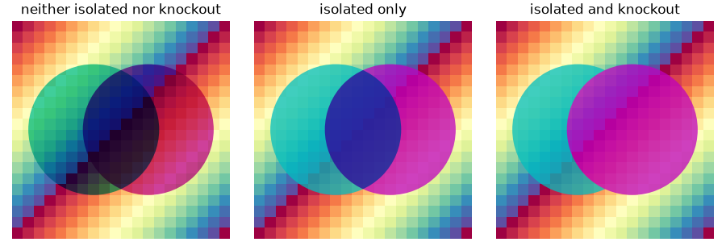
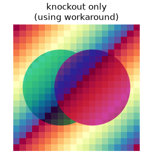

Note
Go to the end to download the full example code.
Blending and compositing groups of artists#
An advanced technique of blending artists (see Blending and compositing artists) is to use a blend group, also known as a transparency group. Blend groups can be isolated, knockout, or both:
An isolated group has the artists within the group rendered into a separate buffer, and the result is subsequently blended into the primary buffer.
A knockout group has each of the artists within the group individually blended onto the initial backdrop, with each successive artist ignoring any modifications underneath it by preceding artists in the group.
The methods to open and close groups are found on the backend renderer, but
user code does not typically directly access the renderer. The convenience
class below (ArtistGroup) makes it straightforward to form a blend group
from a list of artists. Setting group_blend_mode to a blend mode (see
Blending and compositing artists for the allowed options) makes the blend group an isolated
group using that blend mode, whereas specifying group_blend_mode=None makes
the blend group a non-isolated group. Specifying knockout=True makes the
blend group a knockout group.
The first example below shows:
The left panel shows the behavior of a blend group that is neither isolated nor knockout. The result is the same as not using a blend group at all, except that the elements will all be drawn at the zorder of the group. A cyan circle and a magenta circle are successively blended with the "multiply" blend mode into the backdrop.
The middle panel shows how the behavior changes when the two circles are in an isolated blend group. The cyan circle is rendered into an isolated buffer, so its "multiply" blend mode has no visible effect. The magenta circle is then blended with the cyan circle using "multiply". Finally, the isolated buffer is blended into the primary buffer using "normal". Thus, the "multiply" blend mode affects only the overlap between the two circles, and does not interact with the backdrop at all due to the isolation.
The right panel shows how the behavior changes when the blend group is both isolated and knockout. The magenta circle knocks out the portion of the cyan circle that is overlapped. Since there is no longer any overlapping elements in the isolated buffer, the blend modes within the group have no visible effect. As before, the isolated buffer is then blended into the primary buffer using "normal".
Support for the different types of blend groups depends on the backend. See the table below for details.
from operator import attrgetter
import matplotlib.pyplot as plt
import numpy as np
from matplotlib.artist import Artist
from matplotlib.patches import Circle
class ArtistGroup(Artist):
def __init__(self, artists, *,
group_blend_mode=None, group_alpha=1, knockout=False):
self._artists = artists
self._group_blend_mode = group_blend_mode
self._group_alpha = group_alpha
self._knockout = knockout
super().__init__()
def draw(self, renderer):
renderer.open_blend_group(self._group_blend_mode, alpha=self._group_alpha,
knockout=self._knockout)
for a in sorted(self._artists, key=attrgetter('zorder')):
if not a.is_transform_set():
a.set_transform(self.get_transform())
if getattr(a, 'axes', None) is None:
a.axes = self.axes
a.draw(renderer)
renderer.close_blend_group()
fig, axs = plt.subplots(1, 3, figsize=(9, 3), layout='constrained')
for i, (group_blend_mode, knockout) in enumerate([(None, False),
('normal', False),
('normal', True)]):
axs[i].set_xlim(-1, 1)
axs[i].set_ylim(-1, 1)
axs[i].set_aspect('equal')
axs[i].set_axis_off()
axs[i].imshow(np.arange(20*20).reshape((20, 20)) % 19,
cmap='Spectral', extent=[-1, 1, -1, 1])
left = Circle((-0.25, 0), 0.6, fc='c', alpha=0.75, blend_mode='multiply')
right = Circle((0.25, 0), 0.6, fc='m', alpha=0.75, blend_mode='multiply')
both = ArtistGroup([left, right],
group_blend_mode=group_blend_mode, knockout=knockout)
axs[i].add_artist(both)
axs[0].set_title('neither isolated nor knockout')
axs[1].set_title('isolated only')
axs[2].set_title('isolated and knockout')

This table shows which types of blend groups are supported by each backend type (✅ = supported, 🟡 = supported through rasterization, ❌ = not supported).
Option |
Agg |
Cairo |
SVG |
PGF |
PS |
|
|---|---|---|---|---|---|---|
neither isolated nor knockout |
✅ |
✅ |
✅ |
✅ |
✅ |
✅ [1] |
isolated only |
✅ |
✅ |
✅ |
✅ |
✅ |
🟡 |
isolated and knockout |
✅ |
✅ |
🟡 |
✅ |
✅ |
🟡 |
knockout only [2] |
❌ [3] |
❌ [3] |
❌ |
✅ |
✅ |
❌ |
As indicated in the table above, the Agg and Cairo renderers do not natively support non-isolated knockout groups. If all of the artists in the group use the same blend mode, an alternative approach that produces the desired result is to use a group that is both isolated and knockout, with the group blend mode set to that common blend mode. This workaround can also be used to achieve non-isolated knockout groups for the SVG and PS backends if rasterization is enabled. This workaround allows us to show the result of a non-isolated knockout group in the HTML documentation.
fig, ax = plt.subplots(figsize=(3, 3), layout='constrained')
ax.set_xlim(-1, 1)
ax.set_ylim(-1, 1)
ax.set_aspect('equal')
ax.set_axis_off()
ax.imshow(np.arange(20*20).reshape((20, 20)) % 19,
cmap='Spectral', extent=[-1, 1, -1, 1])
left = Circle((-0.25, 0), 0.6, fc='c', alpha=0.75)
right = Circle((0.25, 0), 0.6, fc='m', alpha=0.75)
both = ArtistGroup([left, right], group_blend_mode='multiply', knockout=True)
ax.add_artist(both)
ax.set_title('knockout only\n(using workaround)')
plt.show()
